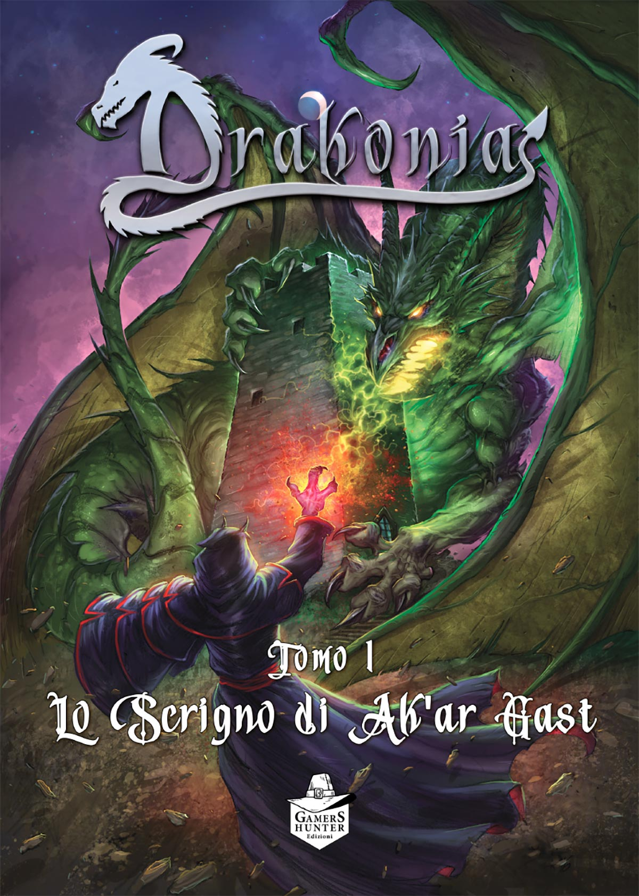

In breve
Sistema Di Gioco: Andrea Rossi Storie: Stefania Rossini e Giordano SardellaEditore: Gamers Hunter Formato: Cofanetto
L’incipit
"Una serata cupa avvolge la città portuale di Malgrow, i cieli sono grigi e minacciosi mentre le onde si infrangono contro le banchine del porto. La luce tremolante delle lanterne è l’unica compagnia per i pochi pescatori e marinai che ancora lavorano durante la notte. In questo scenario, tre giovani approdano a Malgrow, al termine di un lungo viaggio proveniente dai mari del nord. L’imbarcazione che li ha portati, solida e ben costruita, attira immediatamente l'attenzione di Thrain, il vecchio lupo di mare che oramai è un pilastro della locanda "La Tana del Kraken". Bjorn, Astrid ed Eirik – questi i loro nomi – provengono da un’isola lontana dei mari del nord, chiamata Albyon Così inizia l’avventura dal titolo “Le Maree del Destino” dell’Autrice Stefania Wolfy Rossini scritta per i Cani di Odino. Drakonia è un gioco di ruolo ideato da Stefania Rossini e scritto da Stefania Rossini e Giordano Sardella su sistema di gioco di Andrea Rossi. Edito dalla Gamers Hunter.
Le origini
“Abbiamo conosciuto Drakonia in occasione dell’evento “GDR in the Castle” svolto nel Week-end dell’8 e 9 febbraio 2024, presso il Castello di Montecuccolo in Emilia Romagna. Il setting era perfetto: all’interno della Taverna del Maniero incastonata nel Castello Medioevale di Montecuccolo: due giorni di giochi di ruolo e libagioni divine. Fuori: il freddo e 20 centimetri di neve. Abbiamo raggiunto il Castello attraversando il “Passo delle Radici”, provenendo dalla Versilia senza le catene da neve (pessimo inizio). La meta è stata raggiunta soltanto grazie al fortuito incontro di uno spazzaneve che ci ha condotto a Valle infreddoliti e con un mezzo inadatto a quella situazione. Ma appena varcata la soglia del Castello, il corpo e la mente si scaldano in breve tempo per merito di una taverna calda, una cena luculliana e ovviamente… DRAKONIA! Come non innamorarsi subito di questo gioco di ruolo?
L’Ambientazione
Il mondo di Drakonia si forma in un Era di Draghi, e più precisamente a seguito dello scontro tra i due più potenti Grandi Draghi: il rosso fuoco Castagar ed il verde smeraldo Artiglio. Durante la lotta, un potente incantesimo di Artiglio canalizza in forma umana l’essenza di Castagar. Per il grande sforzo però, Artiglio viene prosciugato di linfa vitale e scompare, lasciando dietro di sé le “3 Scintille” per vegliare sulla vallata di Drakonia nei secoli a venire. E fu così che da quel giorno scomparvero i Draghi. Molti secoli dopo, dal Nord del mondo, nell’Isola di Albyon, un giovane cavaliere di nome Himerick decise di fondare il suo regno proprio nella vallata. Nacque quindi il Regno di Drakonia. Da quel momento presero forma le avventure, i miti e le leggende di Drakonia. L’ambientazione è un fantasy classico che lascia spazio all’inventiva e alla narrazione. Gli autori hanno rilasciato 4 tomi (al momento) di avventure che narrano e descrivono la cosmogonia e il mondo di Drakonia. Principalmente i Tomi escono in occasione delle due grandi fiere in Italia: Il Lucca Comics e la Bologna Play.
Il sistema di gioco
Quello che ci ha colpiti del sistema di gioco di Andrea Rossi, siglato come BOSS (Basic Old School System) è il suo comparto di regole, che risultano semplici ed intuitive, basato interamente sui d6. Il gioco è un roll under, che in base alla difficoltà del tiro permette di lanciare un minimo di 1d6 e un massimo di 4d6, sotto il valore della caratteristica richiesta. Le caratteristiche presenti nel gioco sono Prodezza, Intelligenza e Rapidità. Nella scheda personaggio sono presenti, oltre alle caratteristiche già citate, i Punti Resistenza e le Armi. La scheda ricalca lo spirito del gioco e risulta quindi semplice, intuitiva ed immediata. I combattimenti si sviluppano a seguito della determinazione dell’iniziativa con un conseguente test di Prodezza che andrà a confermare le ferite ai danni all’avversario.
Classi
La varietà di personaggi che si aggirano in Drakonia è così suddivisa: Il Guerriero, il Truffatore, il Saggio ed il Mago e di recente arrivo: il Druido. Le classi di gioco sono ben definite e caratterizzate, ma al tempo stesso il gioco permette di poterle personalizzare al massimo. Ad esempio un mago può maneggiare armi bianche, oppure un guerriero può sviluppare anche la sua parte accademica. Tutto questo permette che si possa creare il personaggio più simile all’ideale dell’eroe che si ha in mente, senza paletti o percorsi obbligati.
Mortalità
La mortalità del gioco è molto alta! Questa è proprio una caratteristica del GDR Old School che induce il giocatore più all’utilizzo del cervello che del menare le mani. Anche perché nelle avventure non esiste la livellazione della difficoltà in base al livello dei personaggi, al livello 1 si potrebbe già incontrare un Drago. Insomma, il rischio di lasciarci le penne all’incontro successivo è sempre dietro l’angolo e queste rende il gioco avvincente, divertente e “reale”.
Cosa ci ha colpito
L’avventura che abbiamo giocato al Castello di Montecuccolo si chiama “La leggenda del Pane Raffermo”, la cui storia nasce da un piccolo incidente di stampa. La prima stesura del manuale di Drakonia finì all’interno di un ricettario. Gli autori non persero l’occasione di crearne un’avventura e questo ha sicuramente contribuito a farci innamorare di questo titolo. L’esperienza nel Castello di Montecuccolo, la neve e La Leggenda del Pane raffermo! Tutti questi elementi hanno reso l’imprinting a questo gioco, osiamo dire, FIABESCO e il ricordo, ad oggi, si perde nei confini del magico. Ma ridestandoci dal sogno, quello che ci ha colpito veramente di questo GDR è la sua immediatezza. Il comparto di regole è facile ed intuitivo e questo lascia tutta l’attenzione alla narrazione del Gran Maestro e all’immersività che cala subito il giocatore in quell’ambientazione fantasy suggestiva ed affascinante perfetta per il sistema di gioco. Per quanto ci riguarda è un titolo adatto sia per i neofiti che per i giocatori incalliti, poiché il focus di Drakonia è sempre indirizzato alla narrazione senza che influisca nessuna macchinosità dal sistema di gioco o dal regolamento. Sì, lo sappiamo, i GDR Old School hanno tutte queste caratteristiche, ma questo gioco per noi è proprio l’icona moderna di questo modo di giocare, il manifesto di tutte queste particolarità. Nelle Fiere e negli eventi scorre che è una meraviglia ed è per questo che lo portiamo e lo Masteriamo volentieri e siamo i primi a sostenere questo progetto. Grande plauso per la Gamers Hunter per averci dato la possibilità di giocare a questo titolo
🛒 Dove Acquistare
Se vuoi aggiungere Drakonia alla tua collezione, puoi trovarlo qui:
Ti è piaciuto questo articolo?
Seguici sui social per non perdere i prossimi contenuti e condividi questo articolo con la tua community!